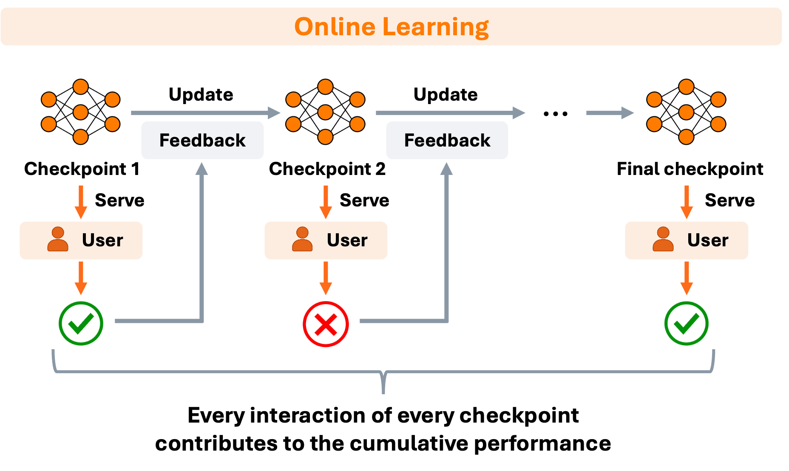
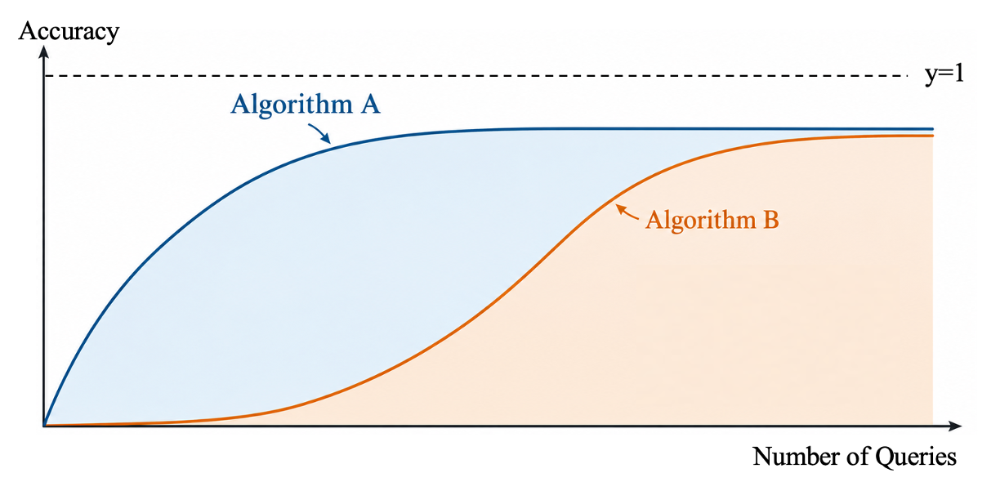
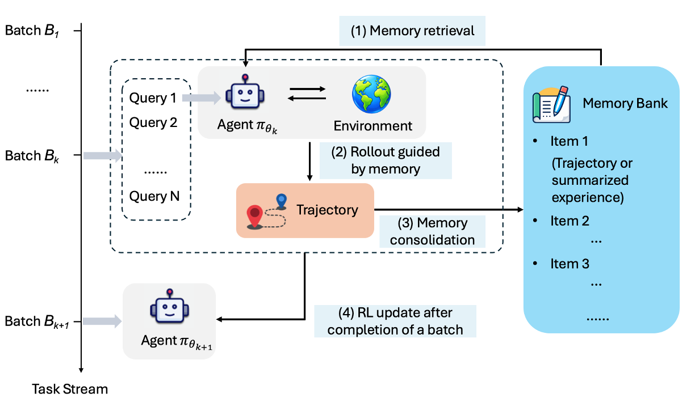
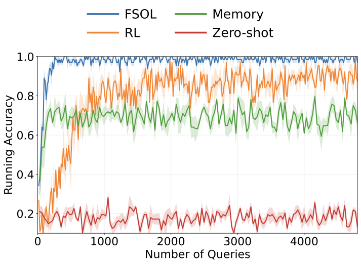
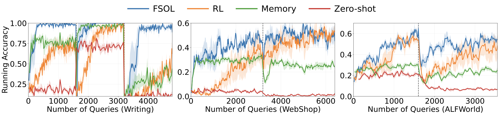
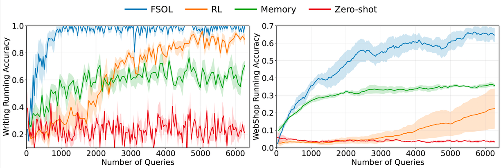
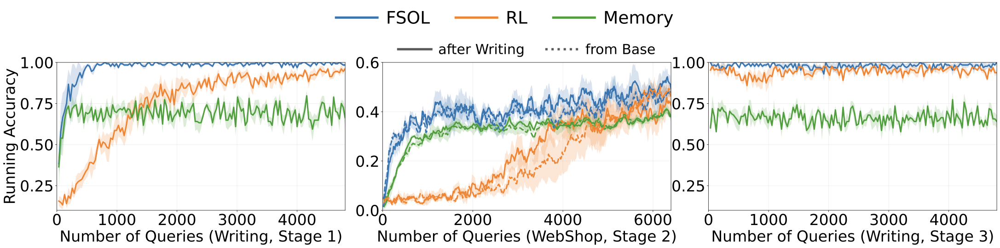

用交互经验在线训练Agents，究竟该怎么做？
- 1MIT
- 2UIUC
- 3Stanford University
- 4Cornell University
- 5MIT-IBM Computing Research Lab
2026 年 10 月
最近，越来越多的研究开始讨论 LLM Agent 在部署之后，如何继续从自身的交互经验中学习。例如，当一个 Web Agent 在网上有过几次购物的尝试以后，这些经验可以被利用起来，后面再进行购物的时候就可以避免之前犯过的错误，提高成功率。这一研究方向通常被称为 test-time learning 或 learning from experience，也算是一种 self-evolving agents。
今年三月的时候，test-time learning 的主流方法还是 memory，就是将过去的经验存储在一个 memory module 中，然后回答每个 query 的时候检索类似的 memory 放在 context 里[1,2,3]。我们当时就在思考：能不能用训模型的方式（即更新模型参数）来从部署经验中学习？这就是当前这个项目的初衷。在做的过程中，已经也陆续出现了一些用训模型的方式来进行 test-time learning 的文章[4,5,6]。不过，我们总是隐隐觉得这些方法缺少了关键的一环。
这些文章是怎么展示学习效果的呢？就是横轴画步数，纵轴画精度，如果精度稳步提升，那就说明经验被训进模型里了[4,5,6]。假如通过这样的方式评估 test-time learning，这和后训练又有什么区别呢？后训练也是随着步数增加，精度提高。我们逐渐意识到，仅仅证明“精度有提升”，其实并没有抓住 test-time learning 的本质。于是我们就按照我们的理解做了一些工作，提出了 Fast and Slow Online Learning（FSOL），年底会在 NeurIPS 2026 的 TTCL Workshop / LCFM Workshop present（论文原文称之为Fast and Slow Reinforcement Learning, FSRL）。在这个文章中，我们主要想传递三个方面的观点。
一、Test-time learning 的评估应该基于 cumulative performance
Post-training 一般是有一个固定的训练集，然后使用 SFT 或 RL 对模型进行训练，最终在测试集上评估最后的 checkpoint。在训练过程中，模型可能会经历许多个 checkpoints，但我们真正关心的通常只是最后一个。在这种情况下，即使中间某些 checkpoints 的表现很差，其实也没有太大关系。
然而，test-time learning 完全不同。如图 1 所示，假设一个 Agent 已经正式上线。第一批 queries 到达后，Agent 给出回答、收到反馈，并根据反馈更新参数；随后第二批 queries 到达，由刚刚更新后的模型进行回答，再获得反馈、再次更新。这个过程不断重复。这意味着，每一个中间 checkpoint 都会立即被用于处理后续的真实 query，而每一次 interaction 都直接面向用户。因此，中间 checkpoint 的表现同样非常重要。每一次 interaction 的对错（或质量）都应该计入最终的评估。

这也意味着，如果一个 online learner 最终确实能够达到很高的精度，但代价是它在学习过程中犯了很多次错误，那么这些错误全部都会被用户感知到，从而大大影响用户满意度。因此，我们真正应该优化的，并不是最终性能，而是整个 interaction stream 上的 cumulative performance。这与机器学习的经典方向在线学习（Online Learning）是一样的范式[7]：数据是流式到达的，且评估是在整个 data stream 上面。所以后面我们也用在线学习来代指从部署经验中学习这种范式。
我们假定 reward 是二元的（0或1），那么截至第 \(N\) 次交互时的总体精度可以写为：
$$\mathrm{Acc}(N)=\frac{1}{N}\sum_{i=1}^{N} r_i$$
或者，等价地，我们也可以使用online learning 里面的经典指标 cumulative regret[7] 来进行评估：
$$\mathrm{Regret}(N)=\sum_{i=1}^{N}\left(1-r_i\right)$$
这里我们设用于和learner比较的oracle policy是每个query都能成功的理想policy。直观来说，这个指标实际上是在问从部署开始到现在，我们一共犯了多少错误。
这个视角实际上也会改变我们对 learning curve 的理解。图2所示的是两个算法 A 和 B的精度随用于训练的query数量的变化。它们最终达到了相同的精度，所以如果把它们看作 offline learner，区别不大。但如果把它们看作 online learner，显然 Algorithm B 在最终“学会”之前有很长一段时间停留在低精度，犯了更多错误，为学习付出了更高的失败代价。因此，对于 online learner 来说，我们真正关心的，是 accuracy–num of queries 曲线下面积（这一积分正比于总体精度），或者是曲线与y=1夹成的面积（等于 cumulative regret），而不仅仅是最终那个 checkpoint 的 accuracy。

二、Cumulative objective 可以得到“学得好”和“学得快”两个要求，基于此我们提出了 FSOL
从 cumulative performance 出发，一个非常自然的分解就出现了：一方面，最终收敛的模型表现要足够好；另一方面，达到这一表现要足够快，也就是样本效率要高。只有这样才能最大化 accuracy–num of queries 曲线下面积。
我们现有的两类方法，只能满足其中一个。第一类是 memory[1,2,3]，把过去的成功经验存下来，那么下次碰到类似任务时，检索到的经验可以立马放在 context 里作为 few-shot examples，不需要大量数据来确保梯度更新稳定。所以 memory 最大的优势就是 fast adaptation。但 memory 也有明显的问题：受模型本身 in-context learning 能力的限制[8,9,10]。如果你想改变的是更深层次的 behavior，比如更长的 reasoning、更可靠的 tool-use strategy，单纯往 context 里塞经验提升有限。所以 memory 的特点是：起步很快，但 ceiling 不够高。
另一条路线就是 RL，也就是直接更新 model weights。RL 最大的优势在于，更新模型参数往往能让回复的 pattern 有根本性变化，有更高的 ceiling performance。但 RL 有另外一个非常现实的问题：它学得慢。没有几千个样本基本不可能实现精度上涨。这个问题在 online setting 下还受到 single-rollout 的限制：传统 RL training，比如 GRPO，可以对一个 prompt rollout 8 次来构建 group；但真实用户 query 一般只有一个 feedback[6,11]。一个购物 Agent 不可能下 8 次单，因为这会有额外花费；一个聊天模型也不能生成 8 个回答，要求用户分给 8 个不同回答打分。所以 online setting 下的 RL 必须是 single rollout per query（BTW，很多基于训练的方式来做 online learning 的 work 没有遵循这一限制）。这样的话你想要多少 rollout，就得消耗多少用户的 query，从 query 角度讲的样本效率很差。RL 就很容易出现这样的 learning curve：前面看不到提升，中间开始慢慢变好，最后性能超过 memory。如果你只看 final checkpoint，这当然没有问题；但如果优化的是 cumulative performance，那么早期每一次失败都由用户承受。
受到 RL community 经典之作 Neural Episodic Control（NEC）[12,13]的启发，我们认为把 memory（对应 NEC 里的 episodic memory）和 RL 结合刚好可以实现又快又好，于是就有了 Fast and Slow Online Learning，FSOL。核心结构就是：Memory 负责 fast，RL 负责 slow。其流程如图 3 所示。Memory 让刚刚获得的 successful experience 可以马上影响下一个 interaction；RL 则把 interaction experience 慢慢 internalize 到 model weights 里。

而且二者不只是“两条曲线取长补短”，而是二者结合更像一种 synergy。在训练初期，纯 RL policy 可能很弱，成功率低，那么大部分 rollout 都是低质量甚至失败的，RL 得到的 positive learning signal 也很 sparse。一旦加入 memory，过去的成功经验能够立刻被 retrieve，于是 rollout quality 会提高，探索更容易进入高 reward 区域。反过来也一样，随着 RL policy 逐渐变强，它自己产生的 successful trajectory 会越来越多、质量越来越高，而这些新的 successful experience 又会进入 memory。
更重要的是，FSOL 并不是某一个特定的算法，而是一个通用的 RL + memory 框架。实验里 RL 我们用了 PPO[14] 和 REINFORCE++[15]（因为需要遵守single-rollout这个限制）；Memory 我们用了原轨迹（即 action sequence）和 Agent Workflow Memory（AWM）[2]。实验结果显示，对不同 memory 形式和 RL 算法，FSOL 都能够超过只用其中一个成分的表现，这说明 FSOL 的收益并不依赖某个特定的 memory 形式或 RL 算法。 我们在 Writing Preference[16,11]、WebShop[17]、ALFWorld[18]、Search-augmented QA[19,20] 四个 benchmarks 上测试了FSOL（如表 1）。对每一个benchmark，我们把训练集的数据构成一个data stream，然后用四个随机种子进行shuffle，让learner在stream上面从头至尾、无重叠地access每个query。 可以看出，FSOL在四个benchmark上都比只用memory或RL的表现要好，说明FSOL的收益并不依赖某个特定的memory形式或RL算法。唯一的例外是 AWM 和 PPO 的组合，因为 AWM 在 WebShop 上面本身就不太 work。
| Memory | WebShop | Search | ALFWorld | Writing | Average | |
|---|---|---|---|---|---|---|
| Zero-shot | Zero-shot | 4.0 ± 0.2 | 15.0 ± 0.0 | 13.0 ± 0.1 | 17.9 ± 0.3 | 12.5 |
| Memory | Raw Memory | 34.0 ± 1.0 | 33.8 ± 0.2 | 25.0 ± 0.5 | 68.7 ± 1.9 | 40.4 |
| AWM | 6.1 ± 0.7 | 33.8 ± 0.2 | 20.3 ± 0.6 | – | – | |
| RL | REINFORCE++ | 38.4 ± 5.6 | 35.8 ± 1.9 | 33.7 ± 3.8 | 79.8 ± 0.4 | 46.9 |
| PPO | 47.7 ± 2.7 | 35.1 ± 0.6 | 40.6 ± 3.9 | 49.7 ± 4.8 | 43.3 | |
| FSOL (Ours) | PPO + AWM | 46.7 ± 2.9 | 37.8 ± 0.2 | 48.8 ± 3.0 | – | – |
| PPO + Raw | 56.3 ± 0.9 | 37.5 ± 0.6 | 50.9 ± 3.2 | 96.3 ± 0.5 | 60.2 | |
| REINFORCE++ + Raw | 52.5 ± 1.5 | 38.8 ± 0.9 | 52.1 ± 2.4 | 97.4 ± 0.3 | 60.2 |
这里我们可以拿 Writing 作为例子来看一下学习的动态过程，如图 4 所示。这个任务让 LLM 从一个开头续写，要求从三种给定风格中选一种。模型不知道哪种风格会被奖励，由 judge model 判断写作是否符合给定的风格。这里的 memory 就是之前被判定为符合给定风格的 response，RL 算法是 REINFORCE++。对于 memory，很明显的特征就是速度非常快，但是很快就饱和了。RL 起步很慢，但是最终的精度是可以超过 memory 的。而 FSOL 开头基本贴合了 memory 的曲线，起步很快，而且可以超过 memory 的精度平台进一步上升，直到接近 100% 精度。很明显 FSOL 曲线下方的面积是最大的，cumulative performance 最好。

三、评测 Online Learning 不止要看 IID stream
还有一个我们认为经常被低估的问题：interaction stream 应该长什么样？最简单的实验当然是像表1的实验设置一样，准备一堆 queries，shuffle 一下，然后让 Agent 一边做一边学。当前的work大部分也都是这么做的[2,3,4,5,6]。但如果想贴近真实部署的条件，那么只做 stationary IID stream 是远远不够的。真实世界里，stream 本身就是会变化的。有可能我今天对某种写作风格有偏好，但一周以后就变了，聪明的 agent 应该去 track 用户偏好的变化。也可能我每天的任务掺杂了写作、代码、数学，都是完全不同的任务类型。也可能我之前一直集中于写代码，最近用这个模型做了很多 web shopping，但现在又回到了代码，我希望他能记住之前学到的代码的技能，而不是又要从头学。基于实际部署的种种情况，我们不仅测试 stationary stream，还专门构造了 distribution shift、mixed-task stream 和 sequential-task stream。
Distribution shift
首先是 distribution shift。这里我们设置了三种不同的 shift 来源：reward rules、环境，和 query distributions。比如 Writing task 里，系统一开始偏好一种写作风格，之后偏好另一种，再之后又变成第三种，昨天的正确行为，今天可能已经变成错误行为。再比如 WebShop，一开始的购买流程可能是 product page → Buy Now，后来网站改版变成 product page → Add to Cart → Checkout。这里用户 query 没变，reward definition 也没本质变化，变的是 environment dynamics。还有 ALFWorld，我们则构造了 query distribution shift，让前半段和后半段来自不同 task subsets。论文中的 distribution-shift 实验正好覆盖了 reward rule、environment dynamics 和 query distribution 三种变化。
这些 setting 为什么重要？因为一旦 shift 发生，学习速度重新变得重要。假设你的 RL 已经花了 3000 个 query 学会旧 environment，突然网站改版，如果你又需要 3000 个 query 才重新学会，那么这过程中用户收到的全是错误的回答。每次一改版，agent就又要花3000个query重新学一遍，完全是在挑战用户的耐心。这也是 learn fast 变得非常重要的地方。结果如图 5 所示，可以看到，在三种不同的 shift 条件下，FSOL 都是 recover 最快、精度一直领先其他方法的。

Mixed tasks
其次是 mixed tasks。我们实验里直接把 Writing 和 WebShop interleave 到同一个 stream 里，由 Writing 和 WebShop 混合，FSOL 在两个任务上都比单独的 memory 和 RL 维持了更高的 running accuracy，如图 6 所示。

Sequential tasks
最后是 sequential tasks，也就是 A → B → A。比如我们的实验里是 Writing → WebShop → Writing。这个 setting 问的是 continual learning 里两个很经典的问题：第一，学完 A 以后还能不能学 B，也就是 plasticity；第二，学完 B 以后，再回到 A，还记不记得原来的能力，也就是 retention。我们的实验就是为了检验从 Writing 迁移到 WebShop 时的 plasticity，以及回到 Writing 后之前学到的能力是否仍被保留。结果如图 7 所示。这里可以看到，memory、RL 和 FSOL 都做到了：在学习 WebShop 的时候，直接从 base model 开始（中间图的虚线）和先学 Writing 再学 WebShop（中间图的实线）进度很接近，有足够的 plasticity；在第三个阶段的时候，三种方法的精度也都围绕着第一阶段末尾的精度上下波动，没有把之前学的能力忘掉。

最后
总结一下，我们想传递的三个 messages。
第一，online agent learning 不应该只问“最后模型有没有变强”，而应该问：在它不断服务用户、不断学习的整个过程中，总共表现得怎么样？因此目标应该从 final performance 变成 cumulative performance。
第二，一旦优化 cumulative performance，就必须同时解决 learn fast + learn well。Memory 提供 fast non-parametric adaptation，RL 提供 slower but stronger parametric adaptation，而 FSOL 就是结合了这两种时间尺度，实现最大化 cumulative performance。
第三，online learning 不应该只在 IID stream 上测试。真实 deployment 里，可能有 distribution shift，任务还可能混合不同类型、以及某类型的任务可能消失后再出现。所以一个完整的 online agent evaluation 至少应该逐渐覆盖 stationary、distribution shift、mixed tasks 和 sequential tasks。我们的评测结果也显示 FSOL 在这些设定下表现都强于只使用 memory 或 RL。
更多细节请见论文： Agent Online Learning Beyond Memory。 欢迎批评指正！ hbchen [AT] mit.edu。引用
@inproceedings{
chen2026agent,
title={Agent Online Learning Beyond Memory},
author={Huaibo Chen and Maohao Shen and Siru Ouyang and Dylan Zhang and Zexue He and Yingheng Wang and Xiaotong Zhang and Inkit Padhi and Subhajit Chaudhury and Gregory W. Wornell and Prasanna Sattigeri and Zhang-Wei Hong and KAMAL YOUCEF-TOUMI},
booktitle={NeurIPS 2026 Workshop on Towards Test-Time Continual Learning Agents},
year={2026},
url={https://openreview.net/forum?id=LtrVQShaq7}
}参考文献
- Longtao Zheng, Rundong Wang, Xinrun Wang, and Bo An. Synapse: Trajectory-as-exemplar prompting with memory for computer control. In International Conference on Learning Representations (ICLR), 2024.
- Zora Zhiruo Wang, Jiayuan Mao, Daniel Fried, and Graham Neubig. Agent Workflow Memory. In Proceedings of the 42nd International Conference on Machine Learning (ICML), 2025.
- Siru Ouyang, Jun Yan, I-Hung Hsu, Yanfei Chen, Ke Jiang, Zifeng Wang, Rujun Han, Long Le, Samira Daruki, Xiangru Tang, Vishy Tirumalashetty, George Lee, Mahsan Rofouei, Hangfei Lin, Jiawei Han, Chen-Yu Lee, and Tomas Pfister. ReasoningBank: Scaling Agent Self-Evolving with Reasoning Memory. In The Fourteenth International Conference on Learning Representations (ICLR), 2026.
- Yinjie Wang, Xuyang Chen, Xiaolong Jin, Mengdi Wang, and Ling Yang. OpenClaw-RL: Train Any Agent Simply by Talking. arXiv preprint arXiv:2603.10165, 2026.
- Tianzhu Ye, Li Dong, Qingxiu Dong, Xun Wu, Shaohan Huang, and Furu Wei. Online experiential learning for language models. arXiv preprint arXiv:2603.16856, 2026.
- Linbo Liu, Yuzhe Lu, Youzhi Luo, Sijun Tan, Panpan Xu, and Luke Huan. Continual Learning via Real-Time RL for Agents. rLLM Blog, 2026.
- Elad Hazan. Introduction to online convex optimization. Foundations and Trends in Optimization, 2(3-4):157–325, 2016.
- Ekin Akyürek, Mehul Damani, Adam Zweiger, Linlu Qiu, Han Guo, Jyothish Pari, Yoon Kim, and Jacob Andreas. The Surprising Effectiveness of Test-Time Training for Few-Shot Learning. In Forty-second International Conference on Machine Learning (ICML), 2025.
- Pengrui Han, Peiyang Song, Haofei Yu, and Jiaxuan You. In-context learning may not elicit trustworthy reasoning: A-not-b errors in pretrained language models. In Findings of the Association for Computational Linguistics: EMNLP 2024, pages 5624–5643, 2024.
- Jason Wei, Xuezhi Wang, Dale Schuurmans, Maarten Bosma, Fei Xia, Ed Chi, Quoc V Le, Denny Zhou, et al. Chain-of-thought prompting elicits reasoning in large language models. Advances in Neural Information Processing Systems (NeurIPS), 35:24824–24837, 2022.
- Zhenyu Hou, Yujiang Li, Jie Tang, and Yuxiao Dong. Single-Rollout Asynchronous Optimization for Agentic Reinforcement Learning. arXiv preprint arXiv:2607.07508, 2026.
- Alexander Pritzel, Benigno Uria, Sriram Srinivasan, Adria Puigdomenech Badia, Oriol Vinyals, Demis Hassabis, Daan Wierstra, and Charles Blundell. Neural episodic control. In International Conference on Machine Learning (ICML), pages 2827–2836, 2017.
- Matthew Botvinick, Sam Ritter, Jane X Wang, Zeb Kurth-Nelson, Charles Blundell, and Demis Hassabis. Reinforcement learning, fast and slow. Trends in Cognitive Sciences, 23(5):408–422, 2019.
- John Schulman, Filip Wolski, Prafulla Dhariwal, Alec Radford, and Oleg Klimov. Proximal policy optimization algorithms. arXiv preprint arXiv:1707.06347, 2017.
- Jian Hu, Jason Klein Liu, Haotian Xu, and Wei Shen. REINFORCE++: Stabilizing critic-free policy optimization with global normalization. arXiv preprint arXiv:2501.03262, 2025.
- Angela Fan, Mike Lewis, and Yann Dauphin. Hierarchical neural story generation. In Proceedings of the 56th Annual Meeting of the Association for Computational Linguistics (ACL), pages 889–898, 2018.
- Shunyu Yao, Howard Chen, John Yang, and Karthik Narasimhan. Webshop: Towards scalable real-world web interaction with grounded language agents. Advances in Neural Information Processing Systems (NeurIPS), 35:20744–20757, 2022.
- Mohit Shridhar, Xingdi Yuan, Marc-Alexandre Côté, Yonatan Bisk, Adam Trischler, and Matthew Hausknecht. ALFWorld: Aligning Text and Embodied Environments for Interactive Learning. arXiv preprint arXiv:2010.03768, 2021.
- Zhilin Yang, Peng Qi, Saizheng Zhang, Yoshua Bengio, William Cohen, Ruslan Salakhutdinov, and Christopher D Manning. HotpotQA: A dataset for diverse, explainable multi-hop question answering. In Proceedings of the 2018 Conference on Empirical Methods in Natural Language Processing (EMNLP), pages 2369–2380, 2018.
- Tom Kwiatkowski, Jennimaria Palomaki, Olivia Redfield, Michael Collins, Ankur Parikh, Chris Alberti, Danielle Epstein, Illia Polosukhin, Jacob Devlin, Kenton Lee, et al. Natural questions: a benchmark for question answering research. Transactions of the Association for Computational Linguistics (TACL), 7:453–466, 2019.